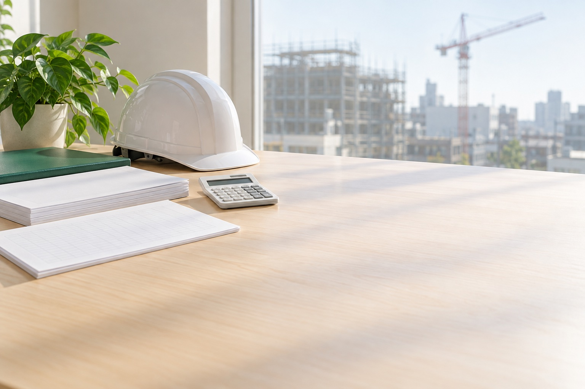

案件ごとの経費・利益管理
経費を入れると、案件の損益と原価率がその場で変わる
受注額と経費から、案件ごとの損益と原価率を自動で集計します。経費が受注額を超えた案件は、赤く目立ちます。
ライフ（阿部）・群馬。業務システムの設計から運用まで、ひとりで。
作って、終わりにしません。
御社のExcelも、紙の台帳も、手作業の転記も。いまの運用を見て、必要な部分だけをシステムにします。作ったあとは、同じ人が直し続けます。

案件ごとの経費と利益、一般経費と現金出納帳、見積書、会計ソフトへの出力。同じシステムで、続けて動きます。架空の会社・ダミーデータで動かした実際の画面（音声なし・約30秒）
経費を一度入れると、損益も、出納帳も、会計ソフトの取込ファイルも出ます。
お客様の社名と画面は出せないので、同じシステムを、架空の会社「サンプル建設」とダミーデータで動かして撮りました。数字も社名も、すべて架空です。画面をクリック（タップ）すると、大きく見られます。
案件ごとの経費・利益管理
受注額と経費から、案件ごとの損益と原価率を自動で集計します。経費が受注額を超えた案件は、赤く目立ちます。
一般経費・現金出納帳
光熱費・通信費・交通費など、工事にひもづかない経費を税込で入れます。現金払いの分は、通帳のような現金出納帳へ自動で入り、残高が日付順に合います。
見積もり作成
撮影した手書きの見積書をAIが読み取り、下書きを作ります。読み取りに自信がない行には印がつくので、写真と見比べて直し、確定すると、清書した見積書をPDFで出せます。
会計ソフト出力
期間内の経費を、会計ソフトの取込ファイルとして書き出します。形式に合わない経費があれば、書き出す前に理由を示して止めます。
業種ごとに、いまの業務に合わせて作りました。
お客様の社名と画面は出せないので、画面のイメージで。いずれも、先に具体的なものを作ってから、運用が始まりました。

| 工事 | 費目 | 金額 |
|---|---|---|
| A邸 改修 | 材料費 | 128,400 |
| A邸 改修 | 外注費 | 260,000 |
| A邸 改修 原価率 | 71.2% |
建設業（設備・内装・建築）／経理1〜2名
御社専用のシステム。Excelの工事台帳と集計が一致し、税理士事務所の読込テスト（TKC FX2）を通過して、2026年10月に本番稼働。使いながら出た要望を反映しています。
この仕組みを詳しく読む
教育事業（学級経営メソッド）／代表1名
事業の立ち上げに合わせてHPと公式LINE（登録特典の自動配信・面談への導線）を作り、2026年8月に公開。保守を続けながら、次の仕組みを一緒に設計しています。

サービス業／代表1名
2026年4月から運用中。受け答えは、要望が出るたびに調整しています。

人材紹介業／代表1名
3か月12回のプログラムを終えて、期限なしの継続に。2026年6月から、AIを使った業務の進め方と、顧客・案件管理の仕組みづくりを週1回の定例で進めています。
作って、つないで、直し続けます。
資料を揃えてからでなくて大丈夫です。いま使っているExcelか帳票を1つお見せいただければ、始まります。
作る
いまの運用を見て、必要な部分だけをシステムにします。社長・担当者ごとの権限と、誰がいつ何を変えたかの記録もつきます。御社専用の環境に作るので、他社の都合で画面が変わることはありません。
つなぐ
入力した数字を、会計ソフトの取込ファイル、スプレッドシート、公式LINEの返信へ受け渡します。会計ソフトに合わせてファイルの形式を設計し、読込テストまで一緒に確認します。
直し続ける
要望は、使い始めてから出てきます。稼働の見守り・不具合の修正・問い合わせ対応・バックアップに加えて、改善の相談まで、運用に含みます。作って終わりにしません。
設計から開発、運用までお任せください。

阿部 龍也ライフ・群馬県。業務システムの設計・開発・運用
小学校で10年教えたあと、業務システムの設計と開発を仕事にしました。ヒアリングした人が設計し、作り、運用も見ます。言ったことが伝わっていない、担当が変わって話が戻る、ということが起きません。
建設会社の経理・工事台帳システムは、会計ソフトへの取込みまで税理士法人と一緒に設計しました。作ったあとも、使う人の「こうできない？」を聞いて、直し続けています。
30分で、作るものと金額の目安をお伝えします。
Excelや帳票をお見せいただければ、その場で「作る」か「既製の道具を組む」か、費用と期間の目安をお伝えします。目安は、初期30万円〜・運用2万円／月〜（税別）です。面談はオンライン（Google Meet）を基本に、ご希望があれば伺います。日程の候補は、こちらから3つお出しします。
合わないと判断した場合は、その場でそうお伝えします。売り込みの電話はしません。
お問い合わせ窓口：ライフ（阿部 龍也・群馬県）。設計・開発・運用を同じ人が担当します。